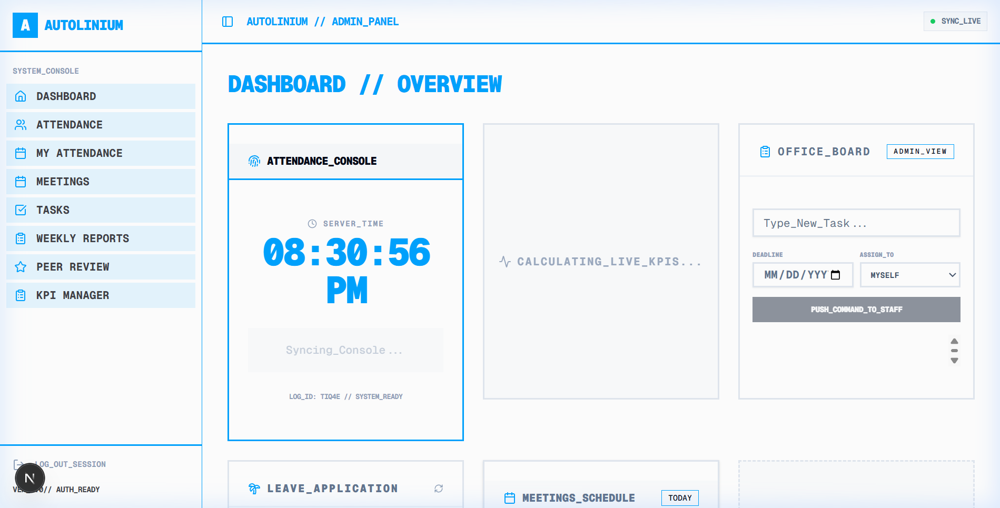
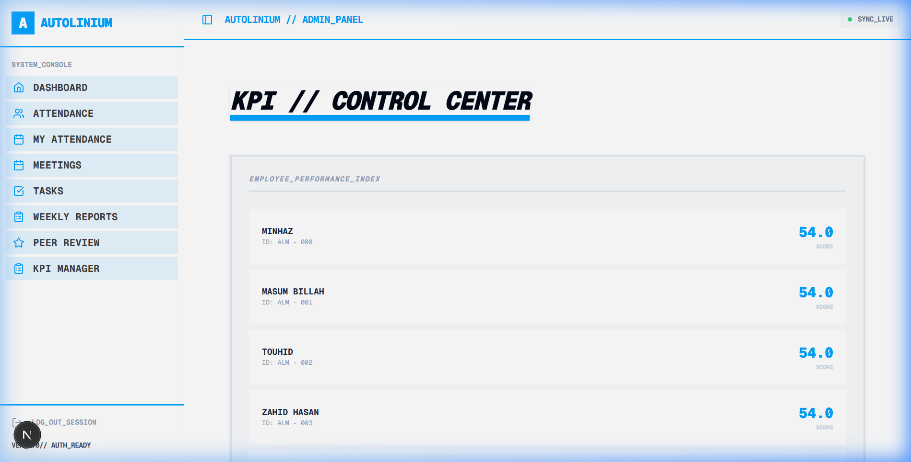
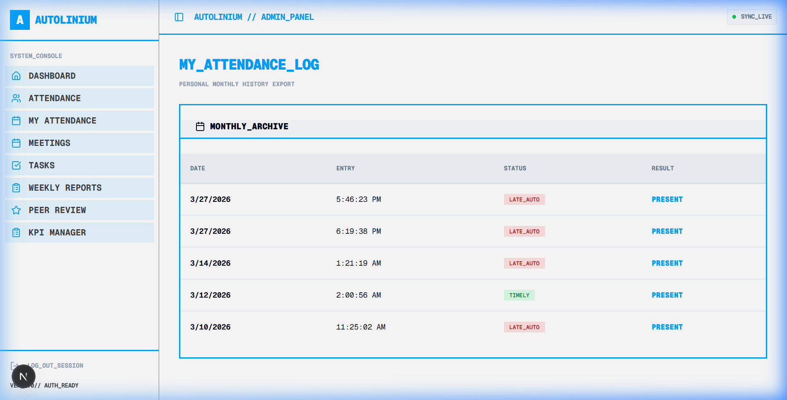

Modern engineering teams often struggle with performance opacity. Traditional spreadsheets are slow, biased, and retrospective.
Autolinium was built to solve this by creating an Autonomous KPI Engine that tracks 9 mission-critical performance metrics in real-time, directly from employee activity.


The Admin Panel provides a "Bird's Eye View" of the entire organization. It consolidates automated data with manual subjective inputs like **Value Added** and **Innovation** to generate a single, non-biased Performance Index for every member.
The Attendance History module goes beyond simple check-ins. It tracks "Promise Times" for late arrivals, distinguishes between "Informed" vs "Uninformed" absences, and automatically calculates overtime bonuses based on work-minute intervals.
STAT_01: Automated Attendance Deduction
STAT_02: Performance-Linked Bonus Engine

A core technical challenge was ensuring stable KPI calculations in a Serverless environment.
I refactored the backend from fragile horizontal network calls to a robust Internal Logic Engine. This eliminated 500-errors on Vercel and reduced API latency by 60%.